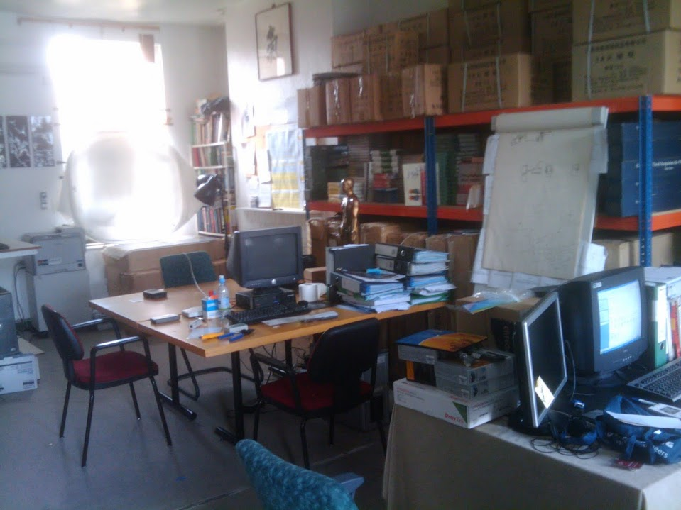
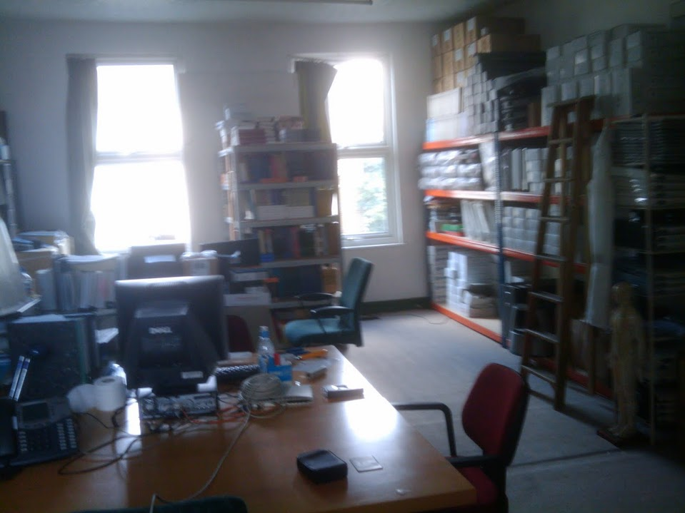
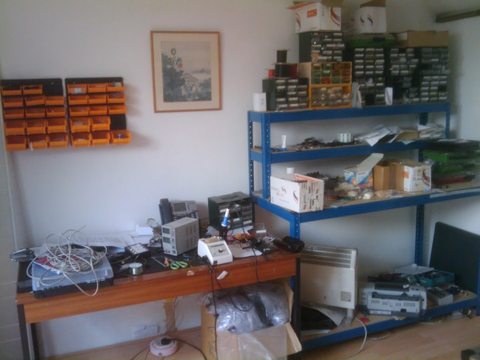
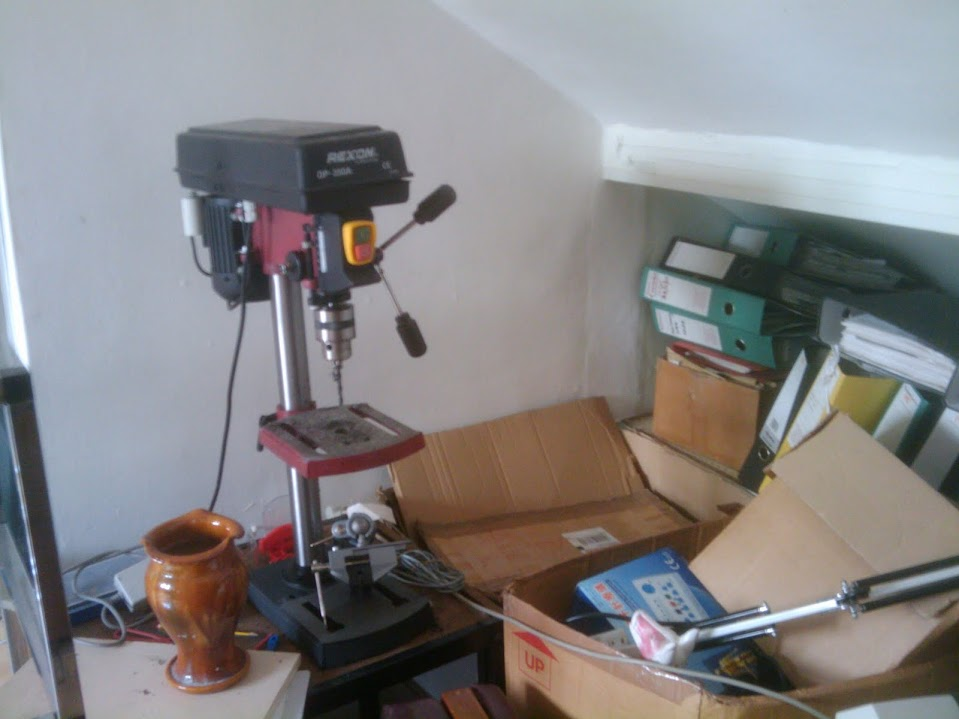
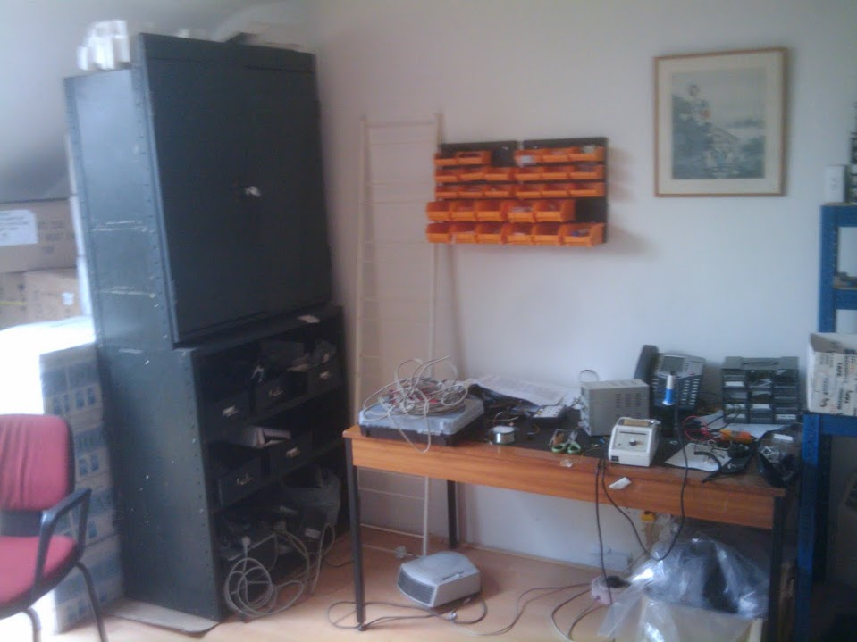
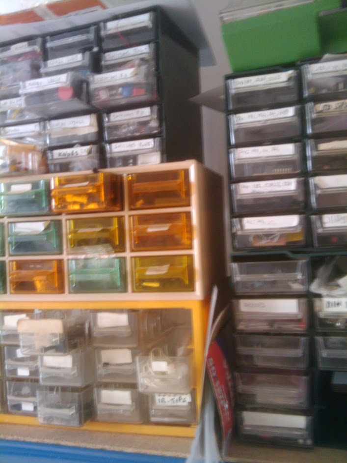

Classic 4
Electro Accupuncture / TENS Device. Classic 4 @ Harmony Medical. Languages: c, cpp, asm, python. As a Firmware Engineer and lead on the Classic 4 Electro Acupuncture/TENS treatment device project, my main focus was software development of the device firmware. I enhanced UI/UX, expanded its treatment modes, and improved user control via keypad. My contributions included bug fixes, adding features, removing unnessary code and in some cases extensive refactoring all within the software development processes outlined in "IEC 62304 – medical device software – software life cycle processes" and of a sufficient quality to pass a rigourous audit. The development involved embedded software programming in CPP, C, and PIC assembly.
More Details
As the Lead Firmware Engineer on the Classic 4 Electro Acupuncture/TENS treatment device project, I played a pivotal role in making major hardware and software enhancements to elevate user experience. Involved in various stages of development—from prototype to post-production Q&A—I contributed significantly throughout the medical device's life cycle, including both software and hardware alterations.
Although I wasn't part of the initial design phase, I took charge of firmware (embedded engineering) development and effectively guided the product towards a successful market launch.
One critical area was refining UI/UX by simplifying controls through keypad input modifications that allowed users to navigate seamlessly between various functionality options more accessible. Additionally, I increased available treatment modes giving users greater flexibility in their therapy choices.
To ensure reliability and usability of our product throughout the process; my technical work also focused on improving the quality of the codebase by testing and debugging issues found in the existing code (I inherited well over 9,000 lines of cpp code written by a total of 3 different authors). Sometimes it was smooth sailing and sometimes I had to implement major refactors but the reward was cleaner, more reliable code and increased device performance.
Moreover, adhering to strict regulatory requirements for medical devices was crucial to ensure the product could be sold in both the UK and European markets. As this device would likely be utilized in settings with sensitive equipment, such as hospitals, it was imperative that it did not interfere with other devices' operations. To achieve this, we designed and were audited according to "IEC 62304 – medical device software – software life cycle processes". This process involved meticulous documentation practices and stringent testing procedures, as well as a revision of the mainboard to enhance electromagnetic compatibility (EMC) of the device. By doing so, we minimized interference between our product and surrounding equipment, making it safer and more reliable for use in professional environments.
About the Device: Classic 4
Here are some details about the device's capabilities, modes and features:
-Ability to treat different patterns with different electricity parameters.
-Capable of tonify one channel and sedate another channel at the same time.
-Acting concurrently as electro-acupuncture stimulator and TENS / MNS unit.
Single Mode: the parameters of the four channels (outputs) are independent
of each other and controllable by the user.
Paired Mode: four channels are arranged in two pairs (CH1 & CH2)
and (CH3 & CH4) and the pulses on each pair are simultaneous (+/-20 microseconds).
Sync Mode: four channels are synchronised in time and share the same parameters.
Sequential Mode: parameters programmatically change over the course of the treatment.
Compact and Elegant design. Four output channels that can stimulate
up to a total of eight needles, or four pairs of electrodes.
A wide range of frequencies between 0.5 Hz and 200 Hz, in 24 pre-set settings.
The outputs can be symmetrical biphasic or monophasic up to 60mA across a
1K resistive load, with an adjustable pulse width of 64, 128, 192
or 256 microseconds. The outputs is locked to 20mA by default for
acupuncture stimulating. Channel short-circuits protection.
Audio signals to indicate operational error and end of treatment.
25 Pre-set programmes. 8 user defined programmes (save/load slots).
Large back-lit LCD screen 128 x 128 dots.
Image Gallery

My office at Harmony Medical. Nice and quiet, perfect for firmware development / coding. :)
 My old desk (filled with engineering notes, maths textbooks and books about programming and hacking).
My old desk (filled with engineering notes, maths textbooks and books about programming and hacking).

Photo from the other end of the room.

Soldering station and hardware hacking area for protoyping electronics.

Trusty pillar drill.

Another photo from the prototyping / hardware lab on the top floor.
 Electronic Components.
Electronic Components.

More Components.